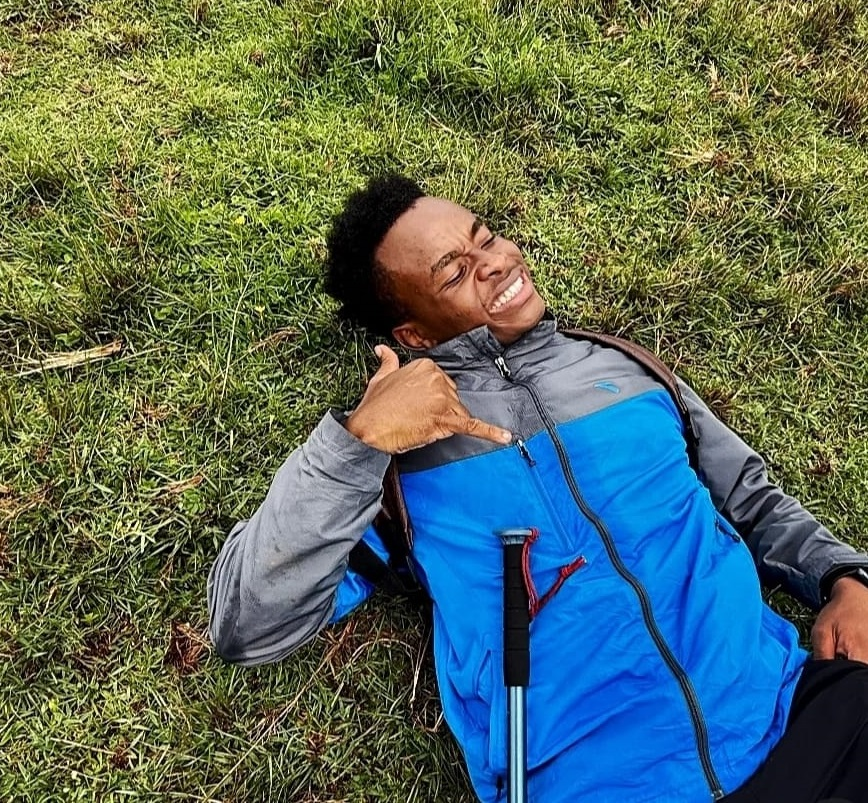
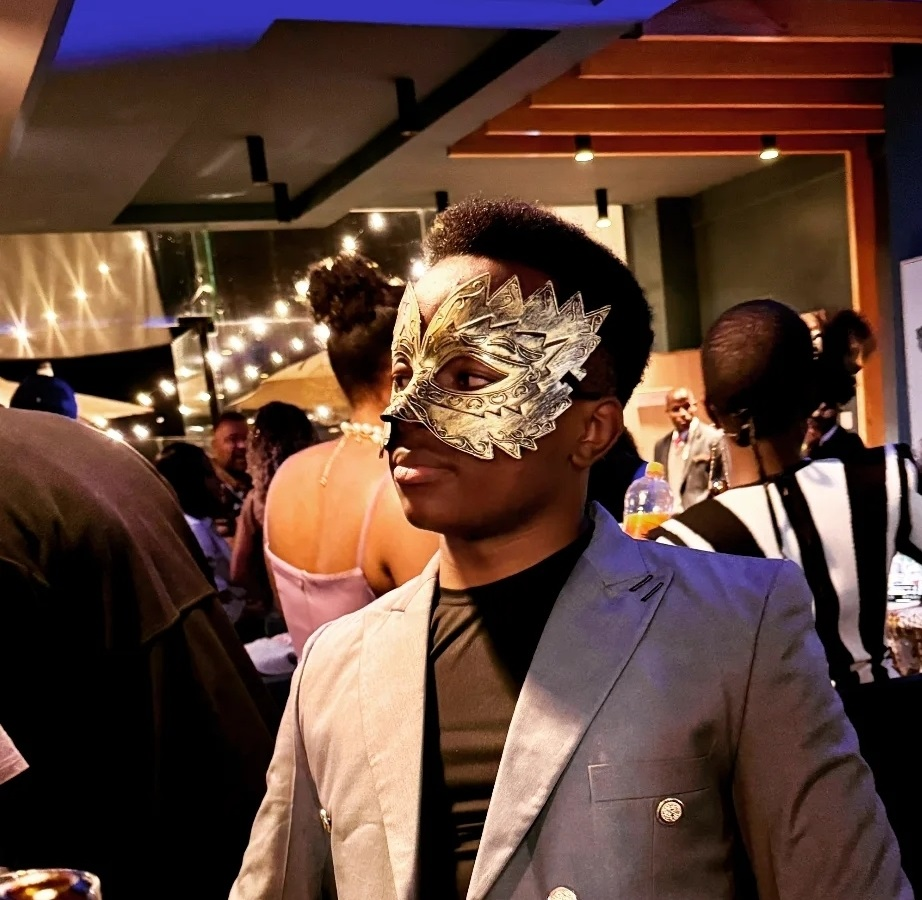

Hey, I’m John Denzel , alias Kidnextdoor; a 22-year-old
Frontend Engineer, Graphic Designer, and a 3rd
Year Computer Science student at Moi University based in
Eldoret.
I’m passionate about building clean, modern websites and creating designs
that are both visually appealing and user-friendly. I enjoy turning ideas
into real digital experiences while continuously learning and improving my
skills in tech and design.
Outside of coding, I’m into fitness, self-improvement, and constantly
pushing myself to grow both personally and professionally.